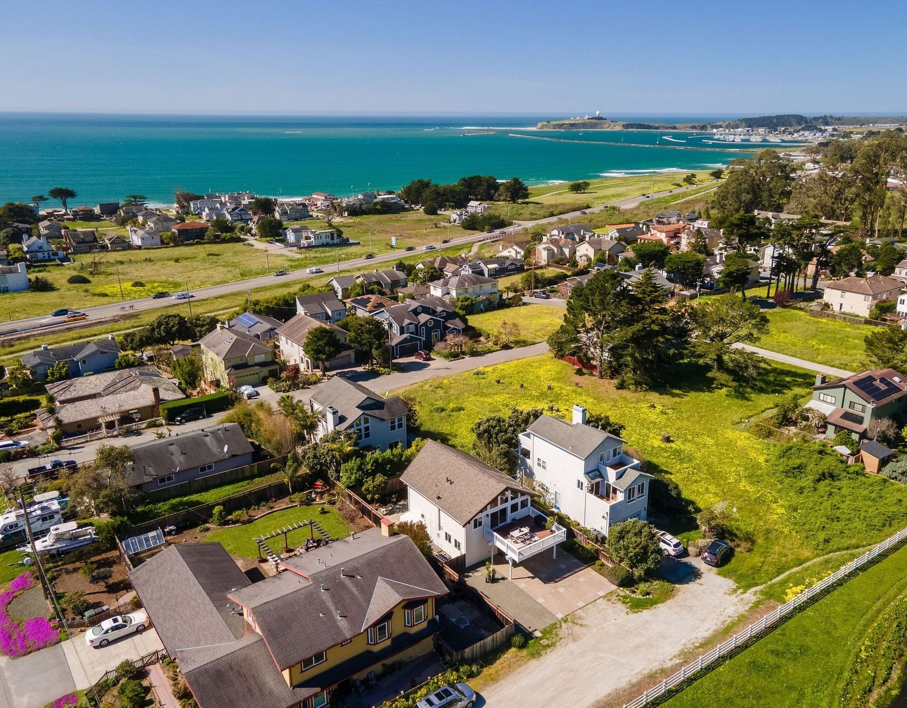

Buy
Sell
Why Smart Sellers Sometimes Ignore the Market
What human behavior can teach us about pricing a home.

Imagine you believe your home is worth $2 million.
You have good reasons. A similar home sold for $1.9 million. Yours has a better kitchen. You’ve invested significantly in improvements. Another property nearby is listed for $2.1 million. So perhaps $2 million feels right.
But how can any of us know exactly what your home will sell for before the buyers who might purchase it have even seen it?
If we could predict that number with certainty, nearly every properly marketed home would sell within a couple of weeks. We’d calculate its value, put it on the market, and wait for someone to pay it.
Real estate doesn’t work that way. We’re trying to predict a future decision made by human beings, and they’re complicated.
Much of the framework I use for thinking about pricing comes directly from Steve Shull, my longtime coach and founder of Performance Coaching. Steve has spent decades coaching real estate professionals. His teachings about pricing, buyer behavior, and what the market reveals once a home is offered for sale have significantly shaped how I approach these conversations with my own clients.
In particular, concepts such as Now Buyers and Later Buyers, treating buyer behavior as evidence, and responding to new information rather than defending an initial pricing decision are principles I’ve learned through Steve’s coaching. He explores many of these ideas further in The Undeniable Truths About Pricing Gravity™. What follows is how I use these principles in my own work with buyers and sellers.
Comparable sales tell us what happened. Not necessarily what’s happening.
Comparable sales are essential, but they’re also backward-looking. They involved different buyers, different sellers and a different moment in the market, sometimes many months ago.
Meanwhile, interest rates change. Financial markets move. Employment and consumer confidence shift. New listings arrive, others go into contract, and buyer demand expands or contracts.
In a stable market, yesterday’s sales may be a very good predictor of tomorrow’s. In a shifting market, up or down, the gap can be significant.
This is also why an experienced, full-time local agent brings something different from the data.
An agent actively representing buyers and sellers knows what’s happening between the closed sales. Which open houses were packed? Where did multiple offers develop? Which listings aren’t getting traction? Which buyers just lost another house and are still circulating? Are buyers becoming more aggressive, or more cautious?
On the San Mateo County Coastside, where the number of comparable properties can already be relatively small and homes can vary considerably in location, condition, views, lot characteristics and proximity to the ocean, that real-time intelligence can be especially useful.
Some of it will eventually appear in the sales data. Some never will. It’s gathered through showings, conversations and negotiations happening in real time.
That’s not clairvoyance. It’s expertise.
The asking price isn’t the same as the value of your home
An asking price doesn’t have to be a declaration: “This is what my home is worth.”
Think of it instead as part of a strategy: “This is how we’re going to introduce the home, engage buyers and learn what today’s market will support.”
Before listing, we study the comps, competition, market conditions, improvements and everything distinctive about the property. But one crucial piece of information doesn’t exist yet: how today’s buyers will behave toward this particular home.
Once the property is available, that changes.
Buyers see it, compare it, visit it, request disclosures, return, or don’t, and ultimately write offers or choose something else.
That’s information no comparable sale can give us.
But what if we price too low?
This is one of sellers’ most understandable fears.
What if we leave money on the table? Shouldn’t we build in some negotiating room?
The problem is that buyers don’t evaluate your home in isolation. They’re comparing it with everything else available.
When buyers perceive a home as overpriced, they don’t necessarily think, great, they’ve left me room to negotiate. They may decide the seller is unrealistic and an offer isn’t worth the effort. They may not want to waste their time, or expose themselves to the emotional sting of falling in love with a home, writing what they believe is a reasonable offer, and being rejected.
So they wait. Or they buy something else.
Think about our own behavior as consumers. How many shoppers rush to pay a premium for something? How many more become interested when something they already like represents good value?
A home is obviously much more complex than an ordinary consumer purchase, but the behavioral instinct is familiar. People like to feel they’re getting value.
That doesn’t mean giving your house away. It means recognizing that buyer engagement has value too.
Now Buyers, Later Buyers, and social proof
One of the most useful distinctions Steve Shull teaches is the difference between Now Buyers and Later Buyers.
At any given moment, there is a relatively small group of Now Buyers. They’re ready, willing and able to purchase. They’ve toured competing homes, watched sales close, perhaps lost a few bidding wars, and developed a sophisticated understanding of what their money buys.
Then there are Later Buyers. They may like your home, but they aren’t prepared to act yet. The proposition may need to become more compelling, or something else in their circumstances may need to change.
Good pricing seeks to engage as many qualified Now Buyers as possible while the property is fresh.
And when several buyers become interested at once, something else happens: they notice each other.
A busy open house feels different from an empty one. Multiple disclosure requests can create confidence. Another buyer returning for a second visit creates urgency. Competition itself becomes social proof.
The reverse can be equally powerful.
When a home first appears, buyers ask, “Could this be the one?”
After it sits without meaningful activity, the question can become, “Why hasn’t it sold?”
The house hasn’t changed. Buyer perception has.
What if your home hasn’t sold in 7 to 14 days?
It doesn’t automatically mean the price is wrong. It means it’s time to study the evidence.
Once a home is fully launched on the MLS, broad online exposure happens remarkably quickly. Major real estate portals, brokerage websites and buyer-agent search alerts can put a new listing in front of much of the active buyer pool within a short period of time.
That’s a real shift from a generation ago, when marketing largely determined whether buyers even heard about a home.
Good photography, staging, video, presentation and storytelling still matter enormously. So does thoughtful preparation before a home reaches the market. They can determine whether someone scrolling through listings stops, pays attention and decides a home is worth seeing.
But once a well-presented property has been broadly exposed to the active market, more marketing can’t necessarily manufacture demand that isn’t there.
That’s why we watch what buyers actually do.
Are they coming through the door? Requesting disclosures? Returning for another look? Writing offers? What are agents saying? And perhaps most importantly, what are those buyers choosing to purchase instead?
Where the interest drops off tells us a lot.
Sometimes new competition briefly pulls attention away. Sometimes the presentation needs an adjustment. Sometimes the market simply needs a little more time. But once a home has had meaningful exposure, a lack of engagement becomes information we shouldn’t ignore.
The important thing is to diagnose rather than defend.
This is where psychology can interfere with good strategy. Sellers, and listing agents, can become anxious about making a change because they’re worried about the perception that they “got it wrong.” Ego enters the equation. So does fear.
But why should yesterday’s decision be defended simply because we made it yesterday?
Before listing, we made the best decision possible with the information available. After 7 to 14 days, we have information that didn’t exist before the home entered the market.
The point isn’t to defend an earlier belief or abandon it too soon. It’s to give new evidence the weight it deserves.
Sometimes that evidence tells us to hold firm. Sometimes it tells us to adjust the presentation. Sometimes extraordinary engagement creates competition and discovers value upward.
And sometimes it tells us price has become an obstacle.
Good strategy means knowing the difference.
It’s not where you start. It’s where you end.
Nobody gives a seller a prize for having the highest asking price.
In the Bay Area, being the newest, or highest-priced, listing is a short-lived distinction. New inventory arrives, buyer attention shifts, and today’s headline quickly becomes yesterday’s news.
Nor should success be judged simply by whether a home sells above or below list price.
An impressive asking price that doesn’t produce a buyer accomplishes very little. A strategically chosen asking price that creates engagement and ultimately produces a stronger sale is doing its job.
The result is what matters.
Did presentation and pricing converge to attract the right buyers? Did we create enough engagement to expose the property fully to the market? Did we recognize what buyers were telling us and respond intelligently? Ultimately, did the seller achieve the strongest price and terms the market would support?
That’s why the asking price is a strategic tool, not the scorecard.
And it’s why choosing the right listing agent matters.
You need more than someone who can pull comparable sales and put a home on the MLS. You need an experienced, full-time, active local advisor who is in the trenches with buyers and sellers, connected to other agents, watching competing inventory, and able to tell the difference between an isolated reaction and a meaningful shift in the market.
At Palermo Properties Team, that’s how we approach a sale: use the best information available to develop the strategy, execute it well, watch what buyers actually do, and adapt when the evidence gives us a reason to.
Because ultimately, it’s not where you start that determines whether the strategy worked.
It’s where you end.
If you’re considering selling a home in Half Moon Bay, El Granada, Moss Beach, Montara, Pacifica or elsewhere on the Coastside, even if that decision is months away, we’d be happy to start the conversation.
Photo: Hunter Smithmixter, Dream Big Photography
Questions
Frequently Asked Questions
How do comparable sales relate to a home’s current market value?
Comparable sales are essential for understanding past market activity, but they reflect what happened previously, not necessarily what is happening now. Factors like changing interest rates, economic shifts, and new listings can create a significant gap between past sales and current market conditions.
Is the asking price the same as a home’s actual value?
No, the asking price is not the same as a home’s value; it’s a strategic tool to introduce the property and gauge buyer response. While comps, competition, and property condition are considered, the ultimate market value is determined by how today’s buyers behave toward the specific home.
How should sellers react if their home hasn’t sold in 7 to 14 days?
If a home hasn’t sold within 7 to 14 days, it’s time to analyze buyer behavior and market feedback rather than defending the initial price. This period provides crucial information about engagement, such as showings, disclosure requests, and offers, which should inform the next steps.
What is the difference between ‘Now Buyers’ and ‘Later Buyers’?
Now Buyers are actively ready and able to purchase a home, having already assessed the market and competing properties. Later Buyers may like a home but are not yet prepared to act, requiring the proposition to become more compelling or their circumstances to change.
Keep Reading
More From Stephanie
Market Report
Bay Area Market Reports, Starting With San Mateo County
Next Step
Questions About Your Own Home?
Call Stephanie at (650) 678-5707 or send a note. She will answer with what she is seeing on your street.